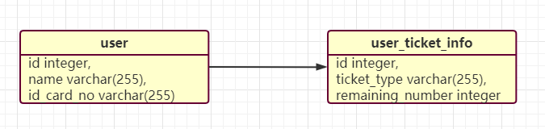
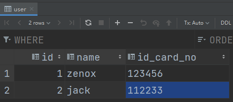
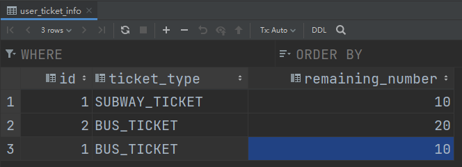
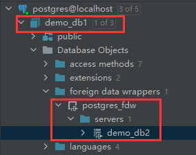
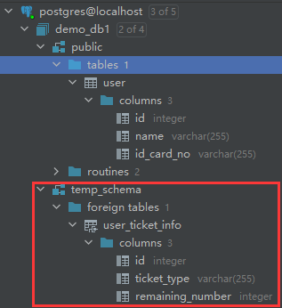
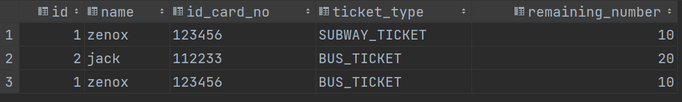

PostgreSQL使用fdw实现跨库查询
前言
PostgreSQL如果想要进行跨库查询，需要使用一个叫做fdw的插件，使用pgsql的命令即可创建，简单实用。
实验准备
除了插件本身如何安装、配置，我们当然还需要准备跨库的数据，比如这个例子中，假设有这样的表结构，user是用户的基本信息，包括主键id、名字以及身份证号；user_ticket_info表是用户持有的票据信息，id的含义与user表的id是一致的，ticket_type为票据类型，remaining_number为票的余量。

为了方便，我们要可以每张票插入几条数据，方便之后join查询。


假设user在数据库demo_db1中，而user_ticket_info在demo_db2中，我们无法直接使用join语法去关联查询，那么接下来就需要介绍fdw的使用了。
fdw安装与使用
简介
fdw全程是foreign-data wrapper，PostgreSQL官方提供了一个插件名为postgres_fdw，专门用于访问其他pgsql数据库的数据，这里的其他是相对于当前数据库的，也就是说也可以访问其他主机上的数据库。相比较于传统的pgsql插件dblink，postgres_fdw使我们可以通过标准的sql来使用其他库的数据，可以说相当实用。
创建extension
首先使用下列命令在demo_db1数据库中创建fdw模块。
1 | create extension postgres_fdw |
创建外部数据库
当前我们使用的是demo_db1这个数据库，我们想使用的表在demo_db2这个数据库中，虽然他们都是在localhost这台主机上，但要使用fdw来进行操作，就得先在demo_db1这边创建一个foreign_server，代表一个外部pgsql服务器。
使用以下命令来创建一个foreign_server。
1 | CREATE SERVER server_name [ TYPE 'server_type' ] [ VERSION 'server_version' ] |
这里解释以下每个参数的作用。
- server_name是你添加的外部服务器名称，具体取什么名并不重要，只是作为当前数据库中使用的一个别名。
- server_type，server的类型，可不填。
- server_version，server的版本，可不填。
- fdw_name，fdw的名称，我们这里使用的是postgres_fdw，那么填postgres_fdw即可，不需要填其他的。
- option，选项，一般用来填外部数据库的host地址、数据库名称、端口号。
根据上述命令，我们根据需要写出自己的语句。
1 | create server demo_db2 foreign data wrapper postgres_fdw options (host 'localhost', dbname 'demo_db2', port '5432') |
此时可以用图形工具来看下demo_db1的数据库信息，应该能发现它多了个foreign data wrapper，其内部还包含了个外部数据库demo_db2（我这里使用的是intellij idea自带的数据库管理工具，如果你不用它，也可以尝试一下pgadmin，专门用于PostgreSQL数据库的图形化工具，个人觉得挺好用）。

创建用户映射
这里的用户映射指的是在demo_db1这边添加的配置，一般是用户名和密码，专门用于连接外部数据库，我们可以创建多个外部数据库，也可以创建多个用户映射专门用于访问每个数据库，它的命令如下。
1 | CREATE USER MAPPING FOR { user_name | USER | CURRENT_USER | PUBLIC } |
照样来介绍下各个参数的作用。
- user_name，当前数据库上存在的一个用户，用于映射到外部数据库的某个用户。也可以使用USER或者CURRENT_USER来指代当前操作的用户；而如果你使用的是PUBLIC，则相当于创建一个公共映射，如果你没有创建其他的用户映射，那么默认就会使用它。
- server_name，输入一个外部数据库名称即可，比如我们刚才创建的那个demo_db2。
- options，一般用于指定外部数据库的用户名和密码。
转换为我们当前这个案例的场景，写出以下sql。
1 | create user mapping for CURRENT_USER server demo_db2 options (user 'postgres', password '123456') |
这里你也可以将CURRENT_USER改成特定的用户，但options是必须填的，填的是demo_db2的用户，即外部数据库的用户。
在当前数据库创建一个schema
为什么要创建一个schema？说白了，实际上就是将外部数据库的schema定义信息（即各个表的定义，不包括数据）全部导入到当前数据库里，schema相当于是个“容器”，有了这个schema，我们就能像操作当前库的数据一样，操纵外部数据库。
这里就随意创建一个temp_schema了，你也可以根据自己的需要来决定如何定义这个schema。
1 | create schema temp_schema; |
导入外部数据库的schema信息
此时我们只需要将demo_db2中用来存储数据的那个schema一股脑导入到temp_schema上就可以了。
1 | IMPORT FOREIGN SCHEMA remote_schema |
按惯例介绍以下各个参数的作用。
- remote_schema，外部数据库的schema名称。
- limit to (…)，只导入某几个表，圆括号内是需要导入的表名，比如我只导入user_ticket_info，则是limit to (user_ticket_info)
- except (…)，不导入哪些表，圆括号内是不导入的表明，用法同limit to一致。
- server_name，即外部数据库名。
- local_schema，即我们刚才创建的用于存放外部schema信息的那个新schema名。
- options，其实我也不太清楚这条命令里，options具体能干啥，但一般来说不填即可，PostgreSQL官方文档上的说法是：“specific to each foreign data wrapper”。
写出本案例中的import命令。
1 | import foreign schema public from server demo_db2 into temp_schema |
查看并使用外部数据
上一步导入了foreign schema后，我们就可以像使用本地schema一样访问外部的schema了。

尝试使用join语法关联查询，注意需要区分schema。
1 | select u.id, u.name, u.id_card_no, uti.ticket_type, uti.remaining_number from public.user u |
查询结果如下，实验成功。

总结
使用fdw可以让我们像使用本地数据那样使用外部数据，并且postgres_fdw是PostgreSQL官方提供的插件，并不需要使用其他分库分表的中间件，快捷、高效，在跨库查询的需求相对简单来说，是一个很不错的选择。